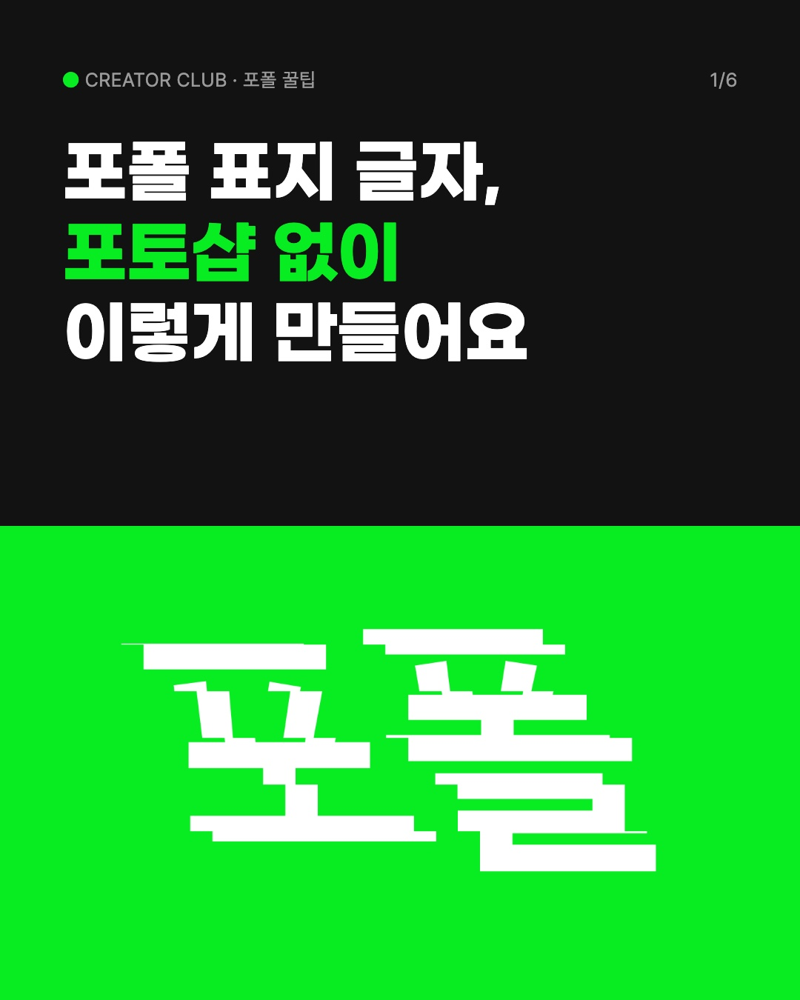
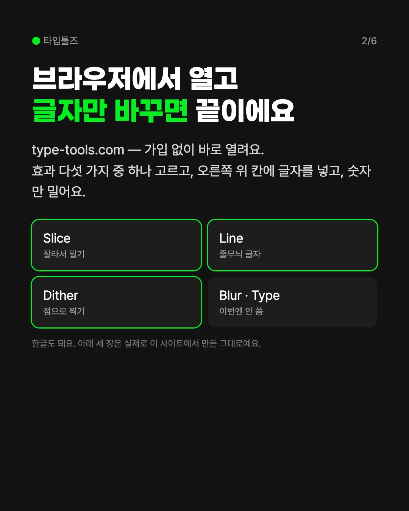
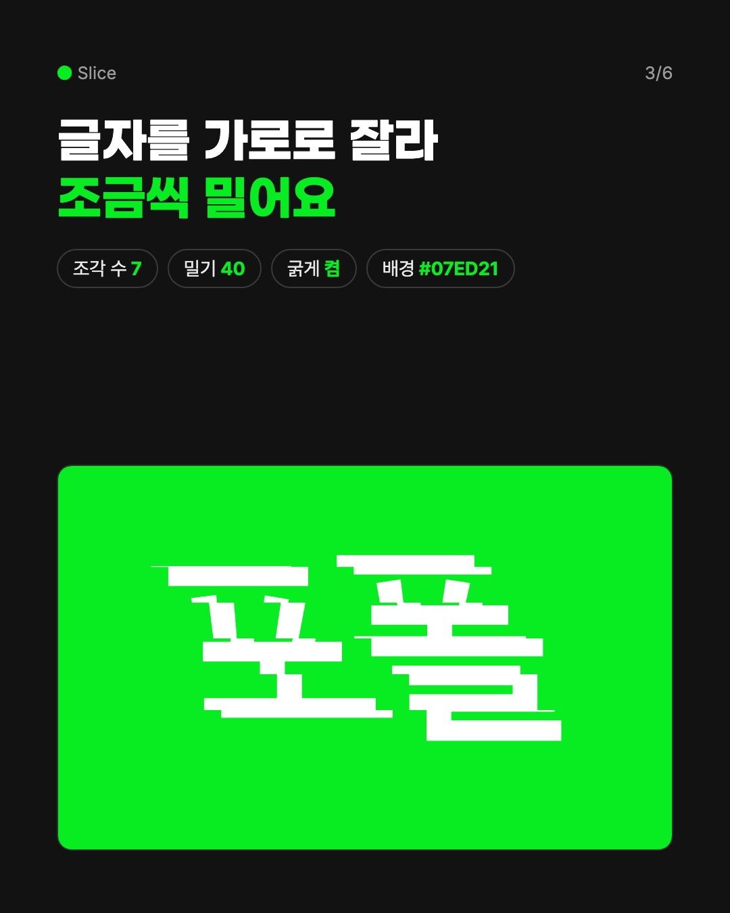
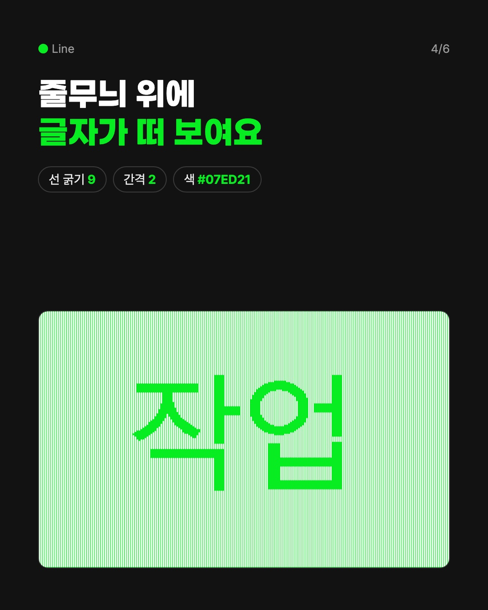
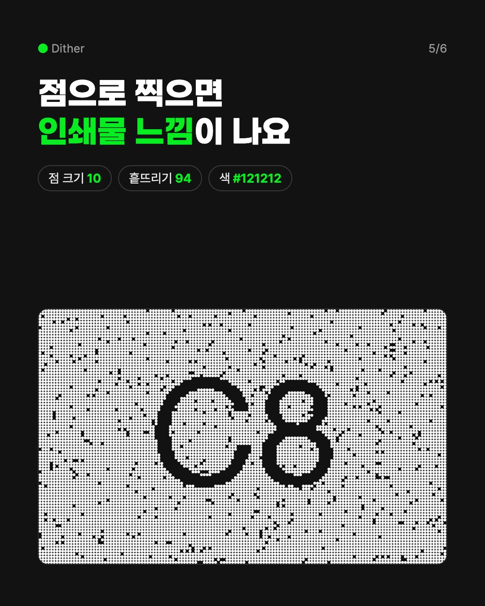
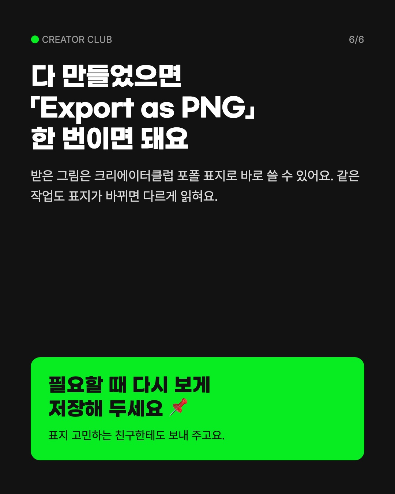

샐리가 자료실에 담은 릴스(타이포 효과 도구 소개)를 읽고, 그 도구로 C8 글자를 직접 만들어 캐러셀 6장으로 짰어요. 안에 든 글자 그림 세 장은 실제로 그 사이트에서 뽑은 그대로예요. 아직 시안이고 인스타에는 올리지 않았어요.






사진을 옆으로 밀면 6장을 넘겨 볼 수 있어요
지금까지 시안은 공감형(라운지)과 이벤트형(위클리 베스트)이었어요. 이번 건 처음으로 「저장해 두는 꿀팁형」이에요. C8 계정에 이런 결도 섞을지 봐 주세요.